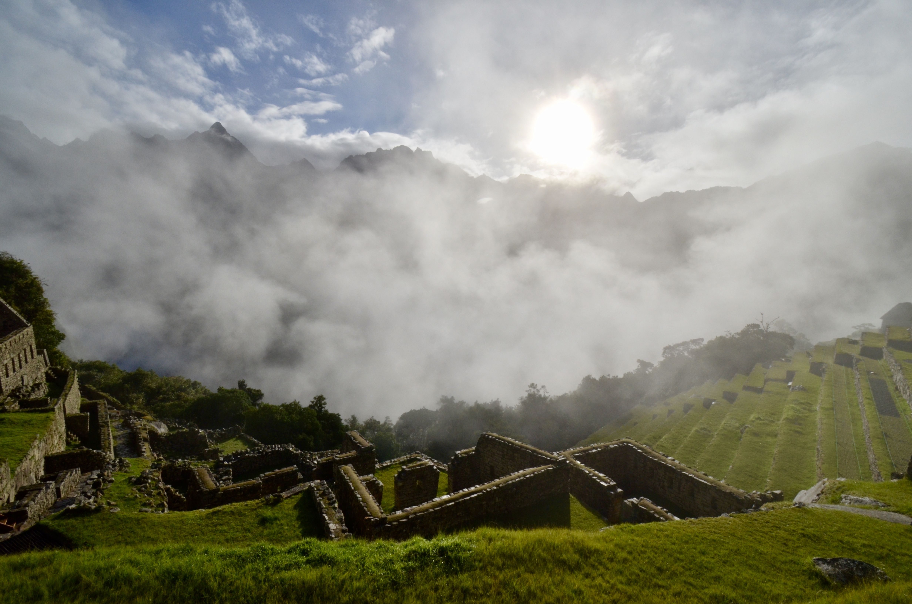
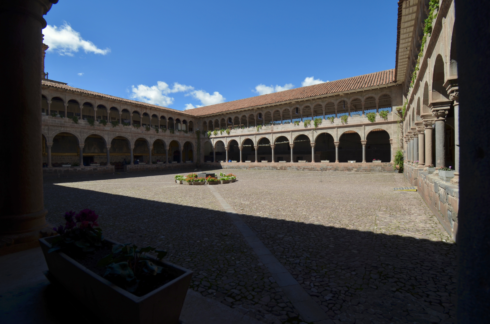
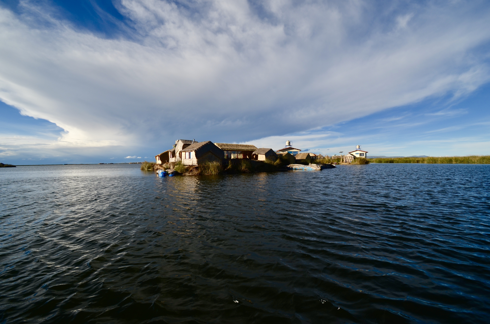

<!DOCTYPE html><html><head><meta name="generator" content="Hexo 3.8.0"><meta charset="utf-8"><meta name="X-UA-Compatible" content="IE=edge"><title>Peru & Bolivia · Rongjia Liu</title><meta name="description" content="Peru &amp; Bolivia - Rongjia Liu"><meta name="viewport" content="width=device-width, initial-scale=1"><link rel="icon" href="/favicon.png"><link rel="stylesheet" href="/css/arctic.css"><link rel="search" type="application/opensearchdescription+xml" href="http://jackliu234.com/atom.xml" title="Rongjia Liu"><script src="//code.jquery.com/jquery-2.2.4.min.js" integrity="sha256-BbhdlvQf/xTY9gja0Dq3HiwQF8LaCRTXxZKRutelT44=" crossorigin="anonymous"></script></head><body><div class="wrap"><header><a href="/" class="logo-link"></a><ul class="nav nav-list"><li class="nav-list-item"><a href="/archives/" target="_self" class="nav-list-link">BLOG</a></li><li class="nav-list-item"><a href="/about/" target="_self" class="nav-list-link">ABOUT</a></li><li class="nav-list-item"><a href="/search/" target="_self" class="nav-list-link">SEARCH</a></li><!-- li.nav-list-item--><!--    a.nav-list-link(class="search" href=url_for("search") target="_self") <i class="fa fa-search" aria-hidden="true"></i>--></ul></header><main class="container"><div class="post"><article class="post-block"><h1 class="post-title">Peru & Bolivia</h1><div class="post-info">Apr 1, 2019</div><div class="post-content"><a id="more"></a>
<p>Pictures I took in Peru recently with my dated (but still awesome) Nikon D5100.<br></p>
<p><br></p>
<p>Fogs quickly filling the entire mountain valley as we arrived at Machu Picchu early morning.<br></p>
<p><br></p>
<p>This was a nice elevated view of Cusco, the capital of the once powerful Inca Empire.<br></p>
<p><br></p>
<p>This photogragh was taken from the inside of the Coricancha at Cusco. The Coricancha had been the most important temple in the Inca Empire.<br></p>
<p><br></p>
<p>After leaving Cusco, we hopped on an overnight bus off to La Paz, taking a stop and spending the night on the beautiful lake of Titicaca.<br></p>
<p><br></p>
<p>We slept on an island built entirely on dry reeds. The submerged part of the reeds is actually edible and tastes very crisp.<br></p>
<p><br></p>
<p>A wasted train yards in Uyuni, Bolivia.<br></p>
<p><br></p>
<p>The pinnacle of the trip, the mirror of the sky - a salt lake with a thin layer of water only at rain season that reflects everything from sky to the horizon. Incredible view.<br></p>
</div></article></div></main><footer><div class="paginator"><a href="/2019/04/cpp/" class="prev">PREV</a><a href="/2019/03/option-theory/" class="next">NEXT</a></div><div id="container"></div><!-- link(rel="stylesheet" href="https://unpkg.com/gitalk/dist/gitalk.css")--><link rel="stylesheet" href="/css/gitalk.css"><script src="https://unpkg.com/gitalk/dist/gitalk.min.js"></script><script>var gitalk = new Gitalk({
    clientID: '4ec287ddd4ac34ff5087',
    clientSecret: 'ae45426765f12ac3e2f903662b8938dc4881f703',
    repo: 'jackliu234.github.io',
    owner: 'jackliu234',
    admin: ['jackliu234'],
    perPage: 100,
    id: 'Mon Apr 01 2019 00:00:00 GMT-0500 GMT'.split('GMT')[0].replace(/\s/g, '-'),
    distractionFreeMode: false,
    pagerDirection: 'first'
})

gitalk.render('container')</script><!-- block copyright--></footer></div><script async src="//cdn.bootcss.com/mathjax/2.7.0/MathJax.js?config=TeX-MML-AM_CHTML" integrity="sha384-crwIf/BuaWM9rM65iM+dWFldgQ1Un8jWZMuh3puxb8TOY9+linwLoI7ZHZT+aekW" crossorigin="anonymous"></script><script>(function(b,o,i,l,e,r){b.GoogleAnalyticsObject=l;b[l]||(b[l]=function(){(b[l].q=b[l].q||[]).push(arguments)});b[l].l=+new Date;e=o.createElement(i);r=o.getElementsByTagName(i)[0];e.src='//www.google-analytics.com/analytics.js';r.parentNode.insertBefore(e,r)}(window,document,'script','ga'));ga('create',"UA-133275176-1",'auto');ga('send','pageview');</script><link rel="stylesheet" href="//cdn.datatables.net/1.10.7/css/jquery.dataTables.min.css" media="screen" type="text/css"><script src="//cdn.datatables.net/1.10.7/js/jquery.dataTables.min.js"></script><script>$(function(){$('.datatable').dataTable( {"order": [[ 0, "desc" ]],"iDisplayLength": -1,"lengthMenu": [[10, 25, 50, -1], [10, 25, 50, "All"]]} );});</script></body></html>